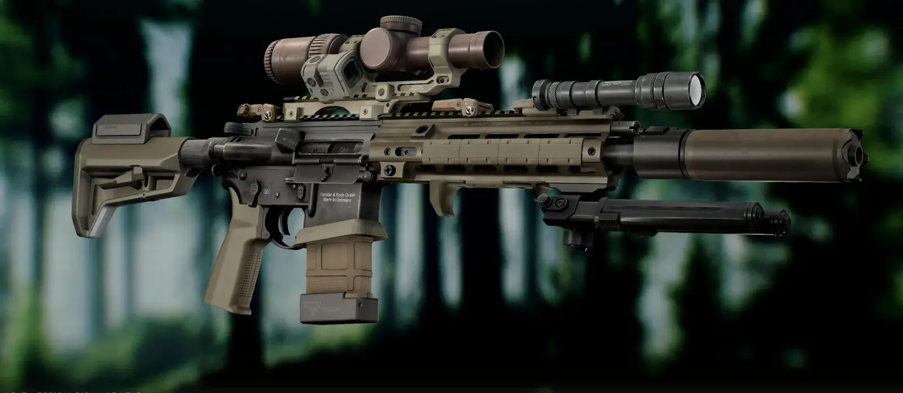
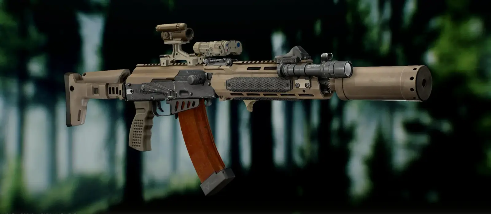
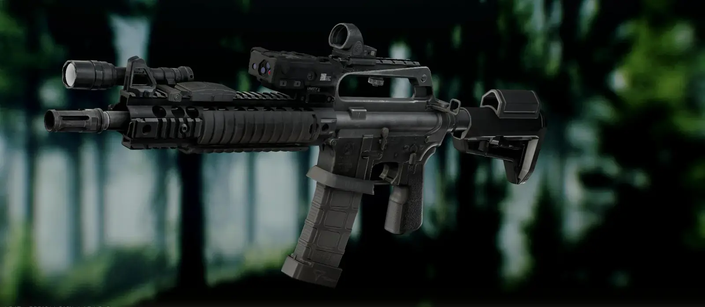
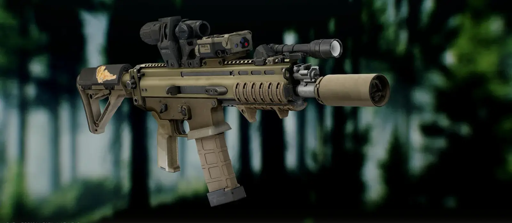
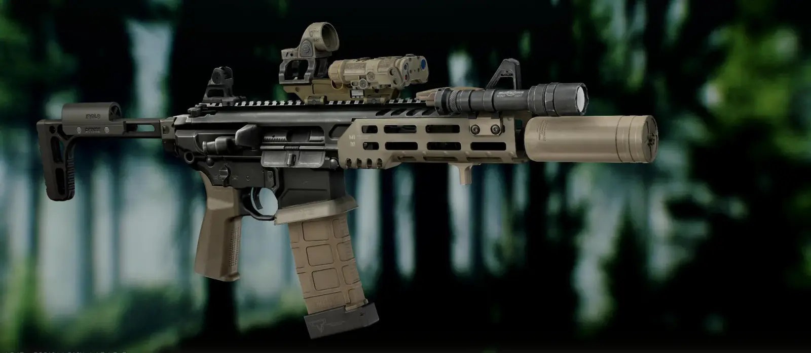

Modern Weapon Mods (MWM)
- Downloads
- 6,931
- Favourites
- 47
- Mod lists
- 54
Modern Weapon Mods (MWM)
Modern Weapon Mods adds a wide variety of real-world, modern attachments to SPT — foregrips, pistol grips, stocks, handguards, optic mounts/risers, pressure switches, magwells, and extended magazines. It’s 147 items total, most of which ship in both black and FDE, with some also available in OD Green. Everything’s available from Mechanic at loyalty level 2 and spawns in weapon crates/boxes around the maps, same as any other attachment. These items are largely targeted at helping users create more modern builds and use the rail space available on SPT’s weapons more effectively.
Notes
This mod REQUIRES Grooveypenguinx’s WTT - CommonLib.
Tyfon’s Weapon Customizer is HIGHLY recommended, as most items will need to be nudged slightly for a perfect per-weapon fit.
Tron’s WTT - Armory, Grooveypenguinx’s WTT - Content Backport and EpicRangeTime’s Epic’s All In One are all compatible and highly recommended to fully employ all parts of this mod to their best use. Other mods may work but have not been tested.
Known bugs: Occasionally, when using Tyfon’s Weapon Customizer to move attachments around, an attachment will teleport offscreen. This can be fixed by rotating the view and right-clicking the attachment to restore it. You may need to remove and reattach the item to stop this from reoccurring. I’ve tested this mod thoroughly and have not found any other issues, but this is the mod’s first release, so if you encounter anything wrong, please leave a comment so I can fix it.
Gallery (Builds shown with parts from recommended mods above.):





New Parts
Foregrips & Handstops
- RailScales Anchor Foregrip (BLK/FDE/Reversed/FDE Reversed) — compact M-LOK hand stop and mini vertical grip for a short, repeatable forward hand index.
- RailScales LDAG (BLK/Reversed) — low-profile Picatinny vertical foregrip with a minimal mounting footprint.
- RailScales Karve Handstop (BLK/FDE) — scalloped, hand-shaped M-LOK hand stop that keys into the palm instead of a flat wall.
- RailScales XOS MLOK (Long/Short) — three-sided M-LOK rail cover, no accessory cutout.
- RailScales XOS-H MLOK (Long/Short) — three-sided M-LOK rail cover with a 6 o’clock cutout for a Karve/Anchor.
- KAC Picatinny Rail Cover (11-Rib/5-Rib) — ribbed polymer Picatinny panel for grip and heat insulation.
- Arisaka Finger Stop, M-LOK (BLK/FDE) — low-profile finger stop in the standard foregrip position.
- Arisaka Finger Stop, Picatinny (BLK/FDE) — same finger stop, clamped to a 1913 rail.
- Arisaka Finger Stop, M-LOK, Forward Mount (BLK/FDE) — same finger stop, mounted forward in the M-LOK bipod position.
- Arisaka Finger Stop, Picatinny, Forward Mount (BLK/FDE) — same finger stop, mounted forward in the Picatinny bipod position.
- GG&G SFG-1 Vertical Foregrip — short, low-profile Picatinny vertical grip machined from Acetal polymer, keeps a CQB setup compact without giving up a solid support-hand grip.
- Magpul M-LOK Hand Stop Kit (BLK/FDE) — low-profile M-LOK hand stop with a reversible finger index and TSP texture, keeps the support hand off a hot barrel or muzzle device.
- Magpul M-LOK Rail Covers, Type 2 (Short/Long, BLK/FDE) — snap-together two-piece M-LOK rail panel with TSP texture and an integrated cable-routing clip.
- Magpul XTM Hand Stop Kit (BLK/FDE/OD) — Picatinny hand stop kit pairing a forward index point with XTM enhanced rail panels, using the same interlocking tab system as the XTM rail covers.
- Magpul XTM Rail Cover (Short/Long, BLK/FDE/OD) — snap-together two-piece Picatinny XTM rail panel with TSP texture and an integrated cable-routing clip.
Pistol Grips
- Magpul MOE-K2 (BLK/FDE/OD) — refined MOE profile with a bigger palm swell and extended beavertail.
- Reptilia CQG-L (BLK/FDE/OD) — extended CQG grip with a taller beavertail for more hand real estate.
- Die Free Co. Kung-Fu Grip (BLK/FDE/OD) — 12-degree AR pistol grip that lines the wrist up in a natural fighting posture.
Stocks & Stock Adapters
- Magpul CTR w/ LaRue RISR (BLK/FDE/OD) — CTR stock with LaRue’s reciprocating cheek riser pre-installed.
- Magpul MOE SL-K w/Riser (BLK/FDE/OD) — MOE SL-K stock with an Ape Defense cheek riser fitted.
- Magpul MOE SL-K (BLK/OD) — standard quick-detach MOE SL-K buttstock, no riser.
- SIG Sauer TSFS w/Riser — SIG’s thin side-folding stock with an Irregular Defense FEER cheek riser fitted.
- MPX/MCX PMM ULSS Stock w/Riser — PMM ULSS folding stock with an Irregular Defense FEER cheek riser fitted.
- KDG 1913 ACR Stock (BLK/FDE) — folding ACR-style stock adapted to a standard Picatinny mount.
- Zenit PT-1 “Klassika” — adjustable AK skeleton stock converted to a 1913 interface.
- HKParts MP5 AR Buffer Tube Adapter — puts a standard AR buffer tube on an MP5.
- JMAC MP5 1913 Stock Adapter — puts a Picatinny stock interface on an MP5.
- LMT PDW Buffer Tube — shortened AR-15 receiver extension for a PDW-length stock, trims overall length for close-quarters and vehicle work.
- AR-15 LMT SOPMOD PDW Stock — LMT SOPMOD-pattern stock sized specifically for the LMT PDW Buffer Tube.
Handguards
- Daniel Defense RIS II 12.25 (upper/lower handguard, BLK) — SOPMOD Block II-pattern aluminum handguard.
- Chop Boss MCX Gen 1 Handguard M-LOK (BLK/FDE) — slimmed MI Virtus handguard re-fitted for the Gen 1 MCX.
Optic Mounts & Risers
- RailScales MonoLift Riser (BLK/FDE/BLK Reversed/FDE Reversed) — QD riser that lifts one optic to absolute co-witness height.
- Unity FAST Optic Riser, Laser (BLK/FDE) — FAST-pattern riser slotted for a laser/IR device instead of an optic.
- Badger C.O.M.M. Mount, 30mm (BLK/FDE) — modular optic mount with two accessory points for stacking optics off the handguard.
- Condition One J-Arm 45° (T-1/ACRO/RMR-SRO/Deltapoint footprints, BLK/FDE) — offset secondary red dot mount for the C.O.M.M. body.
- Scalarworks LEAP (T-1/ACRO/RMR-SRO/Deltapoint footprints) — single-piece riser that lifts a red dot to co-witness height.
- Irregular Defense OMM system (Micro/Picatinny centers, Longboard/Shortboard front/rear extensions, extension covers, Micro-to-Picatinny adapter — BLK/FDE) — modular optic riser hub with interchangeable front/rear rail extensions and covers.
- Irregular Defense Front Ironsight Riser (BLK/FDE) — Picatinny front-sight riser that brings front ironsights up to level with rear sights mounted on the OMM platform.
- Arisaka Inline Scout Mount, Picatinny (BLK/FDE) — mounts a far-forward light in-line on the rail for a low profile and reduced suppressor/barrel shadow.
- Arisaka Offset Scout Mount, Picatinny (BLK/FDE/Reverse BLK/Reverse FDE) — cants a light 45° off a side Picatinny rail.
- Arisaka Offset Scout Mount, M-LOK (BLK/FDE/Reverse BLK/Reverse FDE) — cants a light 45° off an M-LOK rail.
Switches (Aesthetic only.)
- Unity Axon Remote Pressure Switch — dual-paddle remote switch for a light and laser together.
- Unity Axon SL Remote Pressure Switch — single-paddle version of the Axon, for one device.
- Insight RMT-400-A8 Remote Pressure Switch (BLK/FDE) — dual-button remote switch for an AN/PEQ-15-pattern laser and a separate light.
Magwells (Attach via the pistol grip slot.)
- LCT Steel Magwell for AK Series Rifles — stamped-steel spacer that flares the magazine well opening on AK-pattern rifles, guiding the magazine straight in for faster reloads.
- HRF Concepts RCM Milspec AR-15 Magwell (BLK/FDE) — flared magwell funnel that clamps onto a forged AR-15/M4 lower.
- HRF Concepts RCM HK416 Magwell (BLK/FDE) — HRF Concepts RCM magwell for the HK416.
- HRF Concepts RCM SCAR-L Magwell (BLK/FDE) — HRF Concepts RCM magwell for the FN SCAR-L.
- HRF Concepts RCM MCX Magwell (BLK/FDE) — HRF Concepts RCM magwell for the SIG MCX.
Magazines
- PMAG 20 w/ TTI +5 Base Pad (BLK/FDE) — 20-round PMAG extended to 25 rounds.
- PMAG 30 w/ TTI +5 Base Pad (BLK/FDE) — 30-round PMAG extended to 35 rounds.
- PMAG 40 w/ TTI +6 Base Pad (BLK/FDE/Fakelite) — 40-round PMAG extended to 46 rounds.
- PMAG 20 GEN M2 Straight-Wall (BLK/FDE/FG) — 20-round STANAG magazine built to the older straight-wall PMAG body, discontinued in favor of the tapered GEN M3.
- AK-74 6L20 w/ TTI +5 Base Pad — 30-round AK-74 bakelite mag extended to 35 rounds.
- AK-47 6L10 Bakelite w/ TTI +5 Base Pad — 30-round AK/AKM bakelite mag extended to 35 rounds.
- AK-47 6P2 Bakelite w/ TTI +5 Base Pad — 40-round RPK-pattern bakelite mag extended to 45 rounds.
- AK-47 PMAG 20 GEN M3 w/ TTI +5 Base Pad — 20-round AK/AKM PMAG extended to 25 rounds.
- AK-47 PMAG 30 GEN M3 w/ TTI +5 Base Pad — 30-round AK/AKM PMAG extended to 35 rounds.
- AK-74 6L18 w/ TTI +6 Base Pad — 45-round AK-74 bakelite mag extended to 51 rounds.
- AK-74 Delta-Tek Saiga 545 w/ TTI +5 Base Pad — 20-round AK-74 civilian-carbine mag extended to 25 rounds.
- AK-74 6L26 w/ TTI +6 Base Pad — 45-round AK-74 polymer mag extended to 51 rounds.
Version
1.0.0
Initial release version.